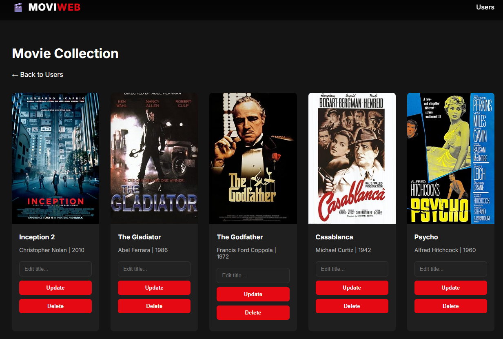

About Me
Hello and welcome! I’m Jessica, working at the intersection of law, business, and technology. With over 10 years of experience in the Life Sciences industry at Bayer AG, I developed a deep understanding of how large-scale organizations handle compliance, risk, and innovation in complex regulatory environments.
As artificial intelligence began reshaping governance and decision-making, I transitioned into Engineering and AI Governance & Compliance to help bridge the gap between legal requirements and technical implementation. Today, I work as a Legal Tech Engineer, designing and building scalable solutions that streamline and
automate legal and compliance workflows. Using Python, AI integrations, and engineering best practices such as Test-Driven Development (TDD) and Object-Oriented Programming (OOP), I develop robust systems that embed compliance directly into operational processes.
My focus is on delivering practical, production-ready Legal AI solutions that reduce risk, increase efficiency, and create measurable value for software-driven organizations.
Target Positions
I am seeking a full-time role in Legal Tech, (Technical) AI Governance & Compliance, AI Consultant or AI Risk Management:
- Consulting firms (Management / Risk / Strategy / Technology)
- Law firms (AI / Tech Law, Regulatory Compliance, Legal Tech)
- Industrial organizations (Pharma, Energy, Banking)
Skills
- AI Governance & EU AI Act
- Regulatory Compliance & Policy Design
- Building legal workflows
- AI Risk Assessment and AI integration
- Compliance Frameworks & Controls
- ISO 42001 & AI Standards
- Python (Pandas, NumPy, Flask, OOP)
- SQL (PostgreSQL, MySQL, SQLite)
- PostgreSQL
- Prompt Engineering
- LLM, Machine Learning
- Data Visualization & Business Intelligence
- APIs (RESTful APIs, OpenAPI, API Integration with GenAI Models)
- Front-end (HTML / CSS / JavaScript)
- Version Control (Git, GitHub)
Projects
Remora – A place for all that remains
March 2026 – Present
When the world stands still after loss, Remora offers a space of warmth and connection. This Flask based application is more than a digital archive; it is a gentle companion designed to preserve the voices, stories, and essence of loved ones. By turning memories into a living legacy, Remora helps the bereaved find comfort and guidance whenever they need it most.
MoviWebApp - Flask based application
Feb. 2026 – März 2026
- Built a Movie Web App that allows users to browse and manage movie data through an interactive interface, leveraging the OMDb API.
- Utilized Python (Flask) and SQLAlchemy/SQLite for backend logic and database management, implementing OOP-based DataManagers for clean CRUD operations.
- Developed a maintainable, data-driven, and user-friendly web application using dynamic HTML/CSS templates.
